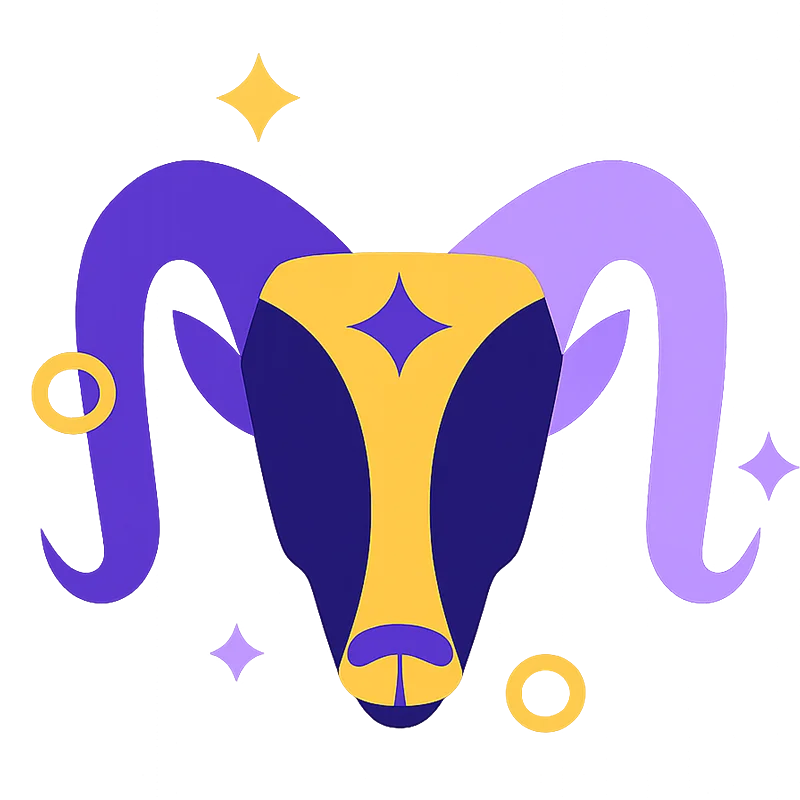

ARIES
Mar 21 - Apr 19
Apr 20 - May 20
Ruled by the planet of love itself, Taurus is a sensual and grounded sign. When it comes to romantic relationships, Taurus prefers to walk towards their goal in steady but certain steps. They rarely rush into anything without seeing its complete potential; they want to find their perfect match and are willing to wait. Guided by Venus, their existence is infused with sensuality, tranquility, and unhurried love.
Mar 21 - Apr 19
Apr 20 - May 20
May 21 - Jun 20
Jun 21 - Jul 22
Jul 23 - Aug 22
Aug 23 - Sep 22
Sep 23 - Oct 22
Oct 23 - Nov 21
Nov 22 - Dec 21

Dec 22 - Jan 19
Jan 20 - Feb 18
Feb 19 - Mar 20
Taurus exudes an aura of strength and tranquility that draws in those who cross their path. Their irresistible allure captivates many, but Taurus seeks a stable partner to build a healthy family together.
Such priorities inspire Taurus to seek a partner who fits into the family life they envision, no matter how long it will take to build one with them. The slow-and-steady approach that Taurus prefers, as well as their unflinching determination, allow little space for half-hearted commitments. Taurus shares similar values and traits with Scorpio, their sister sign, yet they rarely get along due to Taurus' much more practical nature.
The rational thinking and detailed planning of this Earth sign can help Taurus accomplish great things, one of which is a life-long successful relationship. They are ready to go through life's obstacles and joyous moments with their partner and be the most devoted companion.
| Zodiac Signs | Overall | Sex | Love & Marriage | Communication |
|---|---|---|---|---|
| ♈ Aries | ||||
| ♉ Taurus | ||||
| ♊ Gemini | ||||
| ♋ Cancer | ||||
| ♌ Leo | ||||
| ♍ Virgo | ||||
| ♎ Libra | ||||
| ♏ Scorpio | ||||
| ♐ Sagittarius | ||||
| ♑ Capricorn | ||||
| ♒ Aquarius | ||||
| ♓ Pisces |
Taurus resonates with the signs just as focused on building a safe, stable, and beautiful environment for themselves, such as Capricorn, Cancer, Leo, and Pisces. They form a rather practical relationship with Capricorn. Their key shared traits, especially the need for stability and practicality, intertwine harmoniously.
However, Taurus might prefer a more nurturing and present sign, such as Cancer, or a partnership that brings joy and enthusiasm to their life, for example, with a Leo. Despite Taurus's ability to form lasting ties with various Zodiac signs, long-term relationships still require a patient, affectionate, reliable, and nurturing partner.
Pisces embodies these personality traits, intriguing Taurus and revealing their softer, more vulnerable side. Together, they form a duo that allows room for personal growth accompanied by unwavering support and understanding.
Taurus is deeply rooted in their values, and they require a partner who can enjoy life together to the fullest. In addition to stability, Taurus craves all the physical and mental sensations that everyday life has to offer and needs a partner capable of seeing this delicate yet profound side of the world.
Jun 21 - Jul 22
Jul 23 - Aug 22
Dec 22 - Jan 19
Feb 19 - Mar 20
Astrology describes Taurus as a grounding sign that likes comfort and is a very loyal partner. However, what's the Taurus compatibility with other zodiac signs? Who would they feel more comfortable with: Virgo, Aquarius, or maybe Aries? Below, we will review all twelve signs to find out the Taurus compatibility with them.
Taurus and Aries are a passionate but poor-communicative couple. Aries are full of impulse, and Tauruses are stubborn—two factors that definitely give rise to clashes. If Aries and Taurus learn to respect each other's differences, they can create a good couple.
Taurus and Aries are a passionate but poor-communicative couple. Aries are full of impulse, and Tauruses are stubborn—two factors that definitely give rise to clashes. If Aries and Taurus learn to respect each other's differences, they can create a good couple.
Taurus and Aries are a passionate but poor-communicative couple. Aries are full of impulse, and Tauruses are stubborn—two factors that definitely give rise to clashes. If Aries and Taurus learn to respect each other's differences, they can create a good couple.
Taurus and Aries are a passionate but poor-communicative couple. Aries are full of impulse, and Tauruses are stubborn—two factors that definitely give rise to clashes. If Aries and Taurus learn to respect each other's differences, they can create a good couple.
Taurus and Aries are a passionate but poor-communicative couple. Aries are full of impulse, and Tauruses are stubborn—two factors that definitely give rise to clashes. If Aries and Taurus learn to respect each other's differences, they can create a good couple.
Taurus and Aries are a passionate but poor-communicative couple. Aries are full of impulse, and Tauruses are stubborn—two factors that definitely give rise to clashes. If Aries and Taurus learn to respect each other's differences, they can create a good couple.
Taurus and Aries are a passionate but poor-communicative couple. Aries are full of impulse, and Tauruses are stubborn—two factors that definitely give rise to clashes. If Aries and Taurus learn to respect each other's differences, they can create a good couple.
Taurus and Aries are a passionate but poor-communicative couple. Aries are full of impulse, and Tauruses are stubborn—two factors that definitely give rise to clashes. If Aries and Taurus learn to respect each other's differences, they can create a good couple.
Taurus and Aries are a passionate but poor-communicative couple. Aries are full of impulse, and Tauruses are stubborn—two factors that definitely give rise to clashes. If Aries and Taurus learn to respect each other's differences, they can create a good couple.
Taurus and Aries are a passionate but poor-communicative couple. Aries are full of impulse, and Tauruses are stubborn—two factors that definitely give rise to clashes. If Aries and Taurus learn to respect each other's differences, they can create a good couple.
Taurus and Aries are a passionate but poor-communicative couple. Aries are full of impulse, and Tauruses are stubborn—two factors that definitely give rise to clashes. If Aries and Taurus learn to respect each other's differences, they can create a good couple.
Taurus and Aries are a passionate but poor-communicative couple. Aries are full of impulse, and Tauruses are stubborn—two factors that definitely give rise to clashes. If Aries and Taurus learn to respect each other's differences, they can create a good couple.
While to some, the pace in romance for Taurus is slow, to others who value time-tested loyalty and a connection that feels grounded, Taurus gives shelter. With Taurus, love is not running; it's walking leisurely through an overall lush garden. In their honesty and simplicity, love blooms—consistent, deep, and real as the earth beneath your feet.
If luck strikes and you win a Taurus heart, you have a partner for life in fierce loyalty to you. Now, let's delve into the topic of Taurus love compatibility to find out if astrology is something that can work on your side and if you are among the Zodiac signs compatible with Taurus.
Taurus is a sign sculpted from the robust earth itself, steady yet captivating. Taureans are architects studying a blueprint, meticulous in their quest for a life partner and refusing to leap unquestioningly into romance's uncertain waters. Taurus will settle once they find someone whom they can see lifelong compatibility with.
Taurus relationship compatibility yearns for an equal, true partner who'll stand as a beacon for their shared future, unwavering amidst storms and reassuring during the rough patches. Though Taurus may wear the label of 'unyielding,' they are capable of change (at a pace harmonious with their inner rhythm).
Their ruling planet, Venus, makes Tauruses sensual and caring lovers, ready to show you the finest things in life. However, Taurus takes their time when it comes to commitment. They want to make sure that their time is not being wasted on frivolous dates with no love compatibility.
If Taurus feels like you are too reckless or emotionally unavailable, they will quickly move on before they get too attached. There is a reason for that! Stability and commitment make up the foundation of love compatibility for Taurus. When Taurus decides that they want to enter a relationship, they rarely back down, no matter how messy it gets.
It might feel like an eternity waiting for Taurus to take that step forward, yet rushing them is similar to urging a river to change its course. For Taurus, everything is a sequence of carefully planned steps, a deliberate dance that unfolds at the right time. People with this Zodiac sign crave a partner who can appreciate this choreography of life, patiently engaging in their grand design.
Taurus' compatibility with fellow Earth signs—Virgo and Capricorn—is a story of mutual respect, steadfast reliability, and shared wisdom. For example, Virgo and Taurus may find familiarity in each other's values and beliefs.
If Taurus seeks a deeply emotional connection, their love can blossom with a Water sign—Cancer, Pisces, or Scorpio. These signs can show Taurus that there is more than beats the eye, which radically changes the way Taurus experiences the world.
Fire Zodiac signs—Sagittarius, Aries, and Leo—can show Taurus that life is not as serious as it seems and remind them that there is always time for fun and adventure. It might cause friction and instability in the beginning, as Taurus can be unwilling to compromise on the current lifestyle of Aries and the values of Sagittarius.
Air signs—Gemini, Libra, and Aquarius—can breathe life into the Taurus's world. Aquarius may ignite a stimulating beginning, though the diverging life philosophies of Aquarius and Taurus may eventually collide.
In their characteristic loyalty and nurturing nature, Taurus seeks concrete outcomes and visible progress in the relationship with other signs. Taureans have little patience for aimless ideas or drifting relationships. They desire zodiac matches with a clear roadmap and a well-defined destination.
The Taurus woman is a mesmerizing sight that can captivate a lot of people, yet her standards are very precise, and only a selected few can be close to her. In the youthful chapters of her love story, female Taurus may find herself drawn to Leo's frivolous lifestyle and audacious charm. Taurus and Leo's unwavering loyalty and shared taste for life's luxuries match well.
Later in life, the Taurus woman seeks a partner whose roots run deeper than mere glamour so she might move on to other Zodiac signs. After all, life is not a never-ending party for her; she looks for a more mature and caring partner, such as Capricorn or Cancer. Both of these Zodiac signs can provide the security and care she needs. Taurus-Capricorn and Taurus-Cancer are among the best pairings for a life partner.
The Taurus man is a beacon of patience; he sees love as a journey, not a destination. He's open to long-term relationships with Fire and Water signs, such as Aries, Leo, Cancer, Pisces, and Scorpio, drawn to their vibrancy and depth. Male Taurus values core qualities that echo his own and doesn't get hung up on the small stuff. What he craves in a relationship is a different perspective, one that introduces him to facets of life beyond the practical.
If they see the same in their partner, Taurus men can be flexible, keeping their focus firmly on the bigger picture. As long as their partner embodies love, loyalty, and care, a Taurus man is patient enough to let them grow at their own pace. With him, commitment isn't about being perfect but about progressing together, step by step.
People born under the Taurus sign are practical and reliable. They live life to the fullest. They want a marriage that is secure and loyal and a soul mate who knows what comfort and stability truly mean. That will base their compatibility with other zodiac signs on similar values and the need for mutual trust and constancy. Taurus finds a strong match with other Earth signs—Virgo and Capricorn. The practical nature of Virgo suits the nature of Taurus' love for order, and together Virgo and Taurus lay down the foundation of a concrete base. Capricorn's ambition strikes a very good note with Taurus's craving for a secure life, and things work out pretty solid in a relationship. With Cancer, Scorpio, and Pisces Water signs, this may prove to be the emotional depth and nurturing that Taurus needs. The caring nature of Cancer and their love of home life definitely do suit the values of Taurus so well that their relationship has full understanding. Scorpio brings passion and loyalty, but there can occasionally arise conflict because of the stubbornness in this sign. Pisces, the dreamer, shows Taurus the need to be more open to feelings, but they might have some practical-versus-idealistic viewpoint balancing to do. Aries, Leos, and Sagittarians can also prove to be a bit of a problem for Tauruses. The impulsive nature of Aries may dash with the security-loving Taurus, while the limelight that Leo loves to bathe in is not very compatible with Taurus's reserved nature. Sagittarius loves adventure and freedom—traits hard for routine-loving Taurus to understand. Air signs—Gemini, Libra, and Aquarius—may also prove challenging for Taurus. Gemini's moodiness and Libra's indecisiveness try the patience of the creature-of-habit Taurus. However, since Libra is also ruled by Venus, they share with Taurus an enjoyment of beauty and harmony. Taurus may get excited by how Aquarius lives life a bit differently, but their values are simply too different to make this Aquarius and Taurus pairing work in the long haul. Taurus is well-suited for marriage with signs that appreciate stability, loyalty, and common purpose. While there are some predictable difficulties with the more unpredictable signs, a marriage to a Taurus can also be strong on the condition that there is mutual respect and understanding held for one another and a shared commitment to a secure yet loving partnership.
When it comes to intimacy in a relationship, Taurus plunges into the depths of sensuality, leaving the shallow shores of superficiality far behind. They want to be a couple with someone who can share their fondness for physical intimacy and full devotion. Taurus craves a palette of sensations; they go to great lengths to make sure that their partners are fulfilled and loved in just the way they crave. Obviously, Taurus expects the same in return.
Taurus seeks a love that combines passion with indulgence, chasing a sensory experience that leaves a lasting impression. They often find this with Scorpio, their opposing sign. While this pairing can be complex as life partners, the magnetic pull between them is palpable, creating a unique chemistry hard to replicate.
A Water sign, such as Cancer or Pisces, is a good match for Taurus in bed. They offer Taurus a deeply satisfying physical connection. The emotional depth Water signs bring enhances their shared experiences in the bedroom, creating a bond that can fuel long and fulfilling relationships. Taurus' ability to create strong physical connections with these signs can often compensate for minor hitches in other areas of the relationship. For Taurus, physical intimacy is an essential part of their love life that not only satisfies their sensory cravings but also deepens their connection with their partner.
Tauruses are the most loyal, dependable, and practical people among all. Taureans have your back no matter what happens. They are good at listening and, at the same time, helping their friends in solving their problems. Here are some ways Taureans behave in friendship:
It works best as a first structure. It can show likely rhythm, attraction, and tension, but it should not replace a deeper personal reading when the relationship is complex.
Start with sign matching and general rhythm, then move into the specific pairing that matters most. Use a guided expert flow if you need more than a pattern-level answer.
Chinese zodiac compatibility is quite accurate today, though traditional principles and astrology upon which Chinese zodiac compatibility is founded are not foolproof.
It matters most when you are trying to understand pace, emotional style, and long-term fit before you invest more deeply. It is a framing tool, not a final verdict on love.
Compatibility depends on the sign pair. For Taurus, Capricorn, Virgo, Cancer, and Pisces tend to be the strongest broad matches, while the more restless signs need more conscious effort.